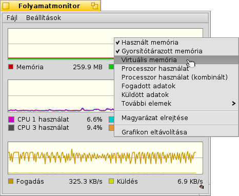

Magyar
Magyar Français
Français Deutsch
Deutsch Italiano
Italiano Русский
Русский Español
Español Svenska
Svenska 日本語
日本語 Українська
Українська 中文 ［中文］
中文 ［中文］ Português
Português Suomi
Suomi Slovenčina
Slovenčina Português (Brazil)
Português (Brazil) English
English Folyamatmonitor (ActivityMonitor)
Folyamatmonitor (ActivityMonitor)
| Asztalsáv: | ||
| Útvonal: | /boot/system/apps/ActivityMonitor | |
| Beállítások: | ~/config/settings/ActivityMonitor settings |
A rendszer kihasználtságát követhetjük nyomon a Folyamatmonitor elindításával és a különféle komponensek kiválasztásával.
Az ablakban jobb gombbal kattintva a következő adatokat követhetjük nyomon:
Használt/gyorsítótárazott memória, Virtuális memória, Processzor használat, Küldött/fogadott adatok, Laphibák, Szemaforok, Portok, Szálak, Csapatok, Programok, Nyers/szöveg vágólap, Média csomópontok.
A grafikon alatt a magyarázat látható (mely elrejthető a menüből). A színek és a grafikon háttere módosítható. Csak egy új színt kell ráhúzni bármilyen palettából, például az Icon-O-Matic-ból.
Új grafikont is tudunk hozzáadni a meglévők mellé a menüből.
A menü egy másik panelt nyit meg, ahol módosíthatjuk a frissítési gyakoriságot.
Mindegyik grafikonnak van saját Replikánsa, amit bárhová odadobhatunk, ami képes azt kezelni (például az Asztal).